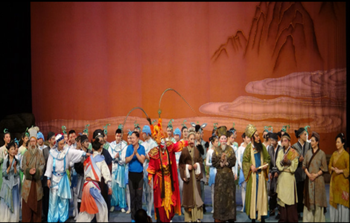

| 传统剧目 | |
|---|---|
| 《白蛇传》： | |
| 中国戏曲名剧，川剧版更注重武打和做工，其中《游湖借伞》、《水漫金山》、《断桥》等折戏常单独演出。 | |
| 《秋江》： | |
| 从昆曲《玉簪记》中《追别》一出独立发展而来，剧情发展中层层剥去“阻力”的外壳，成全爱的愿望。 | |
|  | 《望娘滩》： |
| 作为民间神话故事，影响较大，是川剧最具代表性的剧目之一。 | |
| 《巴山秀才》： | |
| 讲述了晚清巴山秀才孟登科为民鸣冤，终成为政治牺牲品的悲剧故事。 | |
| 《皮金滚灯》： | |
| 川剧灯戏之一，是川剧小丑剧中的经典之作，也是川剧中久负盛名的独门绝活。 | |
| 《易胆大》： | |
| 著名戏剧家魏明伦先生推出的深受群众喜爱、具有巨大影响力的经典剧目。 | |